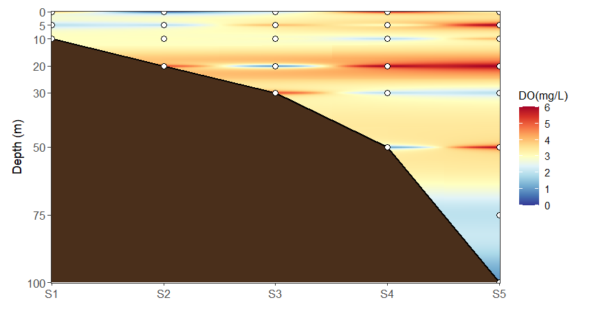
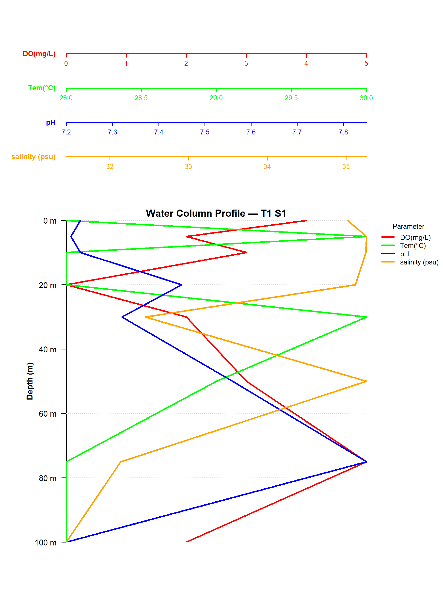
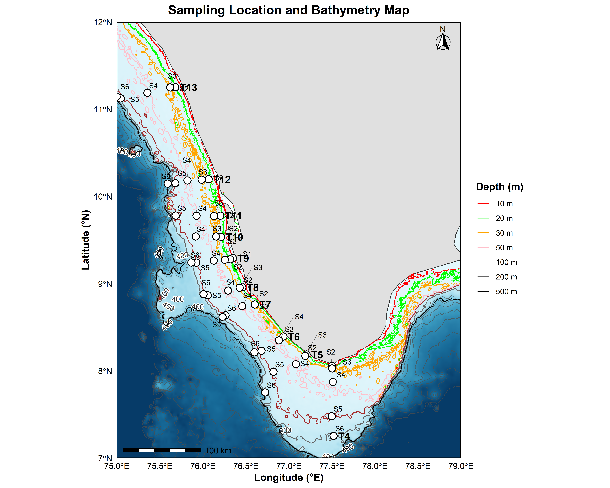

Resources
Open scientific tools, R code and applications for oceanographic analysis. Each resource can have its own description and download button.
R Code 01
Global min max analyser. Used to find out min, max and standard deviation from multiple Excel files.
DOWNLOAD R CODER Code 02
Excel merge app. Used to merge parameters from different Excel files, provided the names are the same.
DOWNLOAD R CODER Code 03
SUTTU SOMS
SUTTU SOMS (Sanyo’s Ocean Monitoring Suite) is an oceanographic data analysis and mapping tool designed to convert station-based environmental observations into scientifically useful spatial maps and validation outputs.
The system supports data processing, spatial interpolation using IDW, publication-quality map generation, and LOOCV (Leave-One-Out Cross-Validation) for evaluating interpolation performance. It is designed to help researchers visualize the spatial distribution of oceanographic and environmental parameters while clearly distinguishing measured observations from model-based estimates.
SUTTU SOMS can be useful for researchers working with marine chemistry, oceanography, environmental monitoring, field observations, and station-based datasets. The workflow includes automated processing, batch map generation, quality-control statistics, validation plots, and final reporting.
Input: Station-based Excel data with geographic coordinates and measured parameters.
Output: High-resolution TIFF maps, LOOCV validation results, residual plots, and summary reports.

R Code 04
Transect-wise Vertical Section Profiler
This R code creates a vertical section profile of oceanographic parameters along a single transect. It displays multiple stations along the transect on the X-axis and depth on the Y-axis, producing an ODV-style view of the vertical distribution of a selected parameter.
The profile can be used to visualize parameters such as dissolved oxygen, temperature, TPAE, TPAH, nutrients, or other measured oceanographic variables. IDW (Inverse Distance Weighting) is used to interpolate between observed data points, while the deeper region below the available observations is masked to represent the ocean bathymetry rather than extrapolated.
How to use
- Prepare an Excel file containing the station name, depth, and parameter columns.
- Open the R code in RStudio and run it.
- Select your Excel file when prompted.
-
Enter the transect name, such as T1, in the
selected_transectfield. -
Enter the exact Excel column name of the parameter you want to
plot in
parameter_column. - The code automatically identifies the stations and available depths, performs IDW interpolation, applies the bathymetry mask, and generates the vertical section.
The resulting profile can be saved as a high-resolution TIFF image for further analysis, reports, presentations, or publication.

R Code 05
Vertical Profile Model
The Vertical Profile Model is an R-based tool designed to generate oceanographic vertical profiles from station-based observational data. It converts depth-wise measurements into clear graphical profiles, making it easier to visualize how oceanographic and biogeochemical parameters change with depth at individual sampling stations.
Vertical profiles are widely used in oceanographic studies to examine the vertical distribution of parameters such as temperature, salinity, dissolved oxygen, nutrients, pH, chlorophyll, carbon parameters and other measured variables. The resulting plots can help identify changes with depth, subsurface features, gradients and distinct water-column patterns.
What is this tool used for?
This tool is particularly useful when measurements have been collected at multiple depths from different stations. Instead of manually preparing individual graphs for every station and parameter, the R code automates the plotting process and produces standardized vertical profile figures.
It can be used for:
- Visualizing the vertical distribution of oceanographic parameters.
- Comparing water-column characteristics between sampling stations.
- Identifying vertical gradients and changes with depth.
- Examining the distribution of multiple parameters within the water column.
- Preparing consistent profile figures for research reports, presentations and scientific publications.
How to use the R code
- Install R and RStudio. R is required to run the analysis, while RStudio provides a convenient environment for running the R script.
- Download the R code and Excel template. Use the download buttons provided in the resource section. The Excel template should be used as the basis for preparing your own dataset.
- Prepare your Excel data. Enter the station information, sampling depths and corresponding parameter measurements in the required columns. Keep the column structure consistent with the provided Excel template.
- Enter your observations. Each depth observation should correspond to the appropriate station and parameter value. If measurements are available at several depths, enter each depth as a separate observation.
- Open the R script in RStudio. Open the downloaded R code and run the script. When prompted, select the prepared Excel file.
- Allow the script to process the data. The script reads the station-based observations and organizes the measurements according to station, depth and parameter before generating the vertical profiles.
- Check the generated profiles. The resulting figures can be inspected to understand how the selected parameters vary through the water column.
Input data
The Excel file should contain station-based observations together with the corresponding sampling depths and measured parameters. The exact structure of the input file should follow the downloadable Excel template supplied with this R code.
Before running the script, make sure that station names, depth values and parameter measurements are entered correctly and that the required columns have not been renamed or removed.
Understanding the output
The output consists of vertical profile plots in which depth is represented along the vertical axis and the selected oceanographic parameter is represented along the horizontal axis. Each profile represents the measured variation of a parameter through the water column at the corresponding sampling station.
These profiles provide a simple visual way to compare stations and identify important vertical features in the observed oceanographic data.
Important notes
- Use the supplied Excel template to maintain the required data structure.
- Check that depth values and parameter measurements use consistent units throughout the dataset.
- Do not change the required column names unless the R code has also been modified accordingly.
- Missing observations should be handled carefully because they may affect the appearance of individual profiles.
- Always check the generated plots against the original observations before using them for scientific interpretation or publication.
In short: this R code provides a simple and reproducible way to transform station-based depth observations into publication-ready oceanographic vertical profiles.

R Code 06
Multi-Parameter / Multi-Transect Water Column Profile
This R code is designed to create water-column depth profiles from oceanographic data stored in an Excel file. Multiple parameters or multiple transects can be represented in a single profile figure, allowing changes in measured values with increasing water depth to be compared easily.
The code uses a multi-panel layout, with the individual parameter or transect axes arranged above the main depth-profile panel. Each profile is assigned a different colour, and its corresponding axis, parameter/transect name, and profile line use the same colour for easy identification.
What can be plotted?
The code supports two types of profile representation:
- Multiple Parameters at One Station: Select a station such as T1 S1 and plot several parameters such as DO, pH, Temperature, Salinity, or other parameters available in the Excel file.
- One Parameter Across Multiple Transects: Select a station number such as S1 and a parameter such as DO, then compare the profiles from different transects such as T1, T2, T3, T4, and so on.
How to use the code
- Install R and RStudio on your computer.
- Prepare an Excel file containing at least two columns: Station and Depth. The remaining numeric columns are treated as oceanographic parameters.
- Station names should follow the format used in the dataset, for example T1 S1, T1 S2, T2 S1, etc.
- Open the R code in RStudio and run it. When prompted, select the required Excel file.
- Choose the required operating mode and modify the station, parameter, or transect selections in the designated section of the code.
- Run the complete script. The code automatically determines the minimum and maximum values of each selected parameter or transect from the Excel data and creates the corresponding X-axis.
Colour coding
The first selected profile is displayed in red, followed by green, blue, orange, pink, brown, violet, sky blue, yellow, and grey. The same colour is used for the corresponding axis, label, and profile line.
A maximum of 10 profiles is recommended to keep the figure clear and readable.
Output
The water-column profile is generated as a high-resolution TIFF image. The output file is automatically saved in the same folder as the selected Excel file.
The depth axis starts at 0 m at the top and increases downward according to the depths available in the dataset. Each profile shows how the selected parameter changes through the water column.

R Code 07
Sampling Location & Bathymetry Map. Used to create a clear map of oceanographic sampling locations together with the bathymetry of the selected study region.
When working with oceanographic or marine datasets, sampling stations are often distributed across different transects and geographic locations. Viewing these stations together with the underlying seafloor depth can provide important spatial context for understanding the sampling area.
The Sampling Location & Bathymetry Map combines sampling coordinates from an Excel file with bathymetric data from a GEBCO NetCDF (.nc) file. It plots the transect and station locations, such as T4 S2, over a bathymetry map where water depth is represented using a light-blue to dark-blue colour scale. Increasing depth is shown by progressively darker shades, with depths of 2000 m and above represented by the darkest colour.
The map also includes bathymetric contour lines with selected depth markings, allowing the underwater topography of the study region to be interpreted easily. Transect and station labels are kept separate from the sampling points, so their positions can be adjusted independently to avoid overlapping points or other map features.
How to Use:
- Make sure R and RStudio are installed on your computer.
- Prepare an Excel file containing the transect/station name, latitude, and longitude. Station names should be written in a format such as T4 S2.
- Prepare a suitable GEBCO NetCDF (.nc) bathymetry file covering the study region.
- Open the Sampling Location & Bathymetry Map R code in RStudio and run the code.
- When prompted, select the Excel file followed by the GEBCO NetCDF file.
- Set the required latitude and longitude limits in the code to define the area to be mapped.
- Run the complete code. The sampling locations, bathymetry, contours, depth markings, north arrow, and scale bar will be generated automatically.
The position of individual transect and station labels can be adjusted without changing the actual sampling coordinates. This allows the map to be kept clear and readable even when several sampling locations are close together.
The final map is saved as both a PNG and a high-resolution TIFF file in the same folder as the Excel file. These outputs can be used for research papers, cruise reports, theses, presentations, and other scientific documentation.
DOWNLOAD R CODE DOWNLOAD EXCEL TEMPLATE
R Code 08
Station Name Sorter. Used to arrange disordered station names into the required station sequence automatically.
When working with field or oceanographic datasets, station names are often entered in different orders during data collection or processing. This can make the dataset difficult to read, analyse, or use for plotting and further calculations.
The Excel Station Name Arranger automatically organizes station names written in the format Tx Sy (for example, T1 S1, T1 S2, T2 S1) into the correct numerical order. It first arranges the Transect (T) number and then arranges the Station (S) number within each transect. If duplicate station names are present, all corresponding rows are retained and kept together.
Most importantly, the entire row is moved together, so the measurements and other information belonging to each station remain correctly associated with that station.
How to Use:
- Make sure R and RStudio are installed on your computer.
- Open the station_name_sorter.R file in RStudio.
- Run the code.
- Select the Excel file containing your station data when prompted.
- The code will automatically arrange the stations.
- A new file named arranged_station_data.xlsx will be created in the same folder as the original Excel file.
The original Excel file is not modified, allowing you to safely check the arranged dataset before using it for further analysis.
DOWNLOAD R CODE DOWNLOAD DISORDERED EXCEL DOWNLOAD ORDERED EXCELRequired Input Files
The following files are provided as templates and supporting data for the mapping and plotting codes. Download the files required for your analysis before running the R code.
Excel Template
Use this Excel template to arrange your station data in the required format. Please do not change the order of the first three columns: Station Name, Latitude and Longitude.
DOWNLOAD EXCEL TEMPLATEGEBCO Bathymetry File
This GEBCO bathymetry file is required by the mapping code to generate the bathymetry/background layer for the maps.
DOWNLOAD GEBCO FILEHow to Use the R Code
These R codes are provided as open and freely usable resources for generating oceanographic analyses, maps and profiles. Please follow the instructions below before running the code.
1. Requirements
- R and RStudio must be installed and working on your computer.
- No programming knowledge is required to run the code if the required files are prepared correctly.
2. Download and Run the R Code
Three R codes are currently provided in the Resources section above. Choose and download the R code required for your analysis.
- R Code 01 – Global min-max analyser for obtaining minimum, maximum and standard deviation values from multiple Excel files.
- R Code 02 – Excel merge tool for combining parameters from different Excel files, provided the relevant names are the same.
- R Code 03 – Suttu SOMS V2 for generating oceanographic maps, with minimum and maximum values determined automatically.
Download the required .R file by clicking the corresponding
DOWNLOAD R CODE button above. Open the downloaded file
and it should automatically open in RStudio.
Before running the code, make sure that R and RStudio are installed and working correctly on your computer.
3. Required Input Files
For codes that require external input files, you may need an Excel data file and a GEBCO bathymetry file.
For the mapping code, the program will ask you to select the files in the following order: Excel file first → GEBCO file second.
The required GEBCO file can be downloaded from the link provided on this website.
4. Excel File Format — Important
The Excel file must follow a specific column arrangement for the code to work correctly. Please ensure that the columns are arranged in the following order:
| Column | Required Information |
|---|---|
| 1 | Station Name |
| 2 | Latitude |
| 3 | Longitude |
| 4 onwards | Other required parameters |
A sample Excel file is provided for download. Please use the provided file as a template and maintain the same column order and format.
5. Output
-
Once the code runs successfully, the generated
maps and profiles are automatically saved as
.tiffiles. - The output files are saved according to the output location specified by the code.
- TIFF files can be opened using standard image viewers or scientific software that supports the format.
6. Modifying and Reusing the Code
The codes are open for everyone to download, modify and reuse.
You are welcome to:
- Modify the code for different datasets.
- Adapt it to generate other types of oceanographic plots.
- Improve or extend its functionality.
- Use it as a starting point for your own analysis and visualization workflows.
If you make useful improvements, sharing them with the wider scientific community is encouraged.
7. Questions, Suggestions and Collaboration
If you encounter any problems, have suggestions, or need clarification regarding the code, please leave a note through the feedback box provided on this website.
I am also interested in collaborations and knowledge sharing. Researchers, students, programmers and others who are willing to share their knowledge, skills and effort for the benefit of the wider scientific community are warmly welcomed.
8. Open Oceanographic Resources
This website will also provide suitable datasets, supporting information and other resources free of charge, wherever possible, to support oceanographic research, education and scientific exploration.
The aim is to encourage open science, knowledge sharing and collaborative research, particularly in the field of oceanography.
Before You Start
- R is installed and working.
- RStudio is installed and working.
- The required
.Rcode has been downloaded. - The Excel file follows the required format.
- Station Name is in Column 1.
- Latitude is in Column 2.
- Longitude is in Column 3.
- The required GEBCO file is available.
- Files are selected in the correct order: Excel → GEBCO.